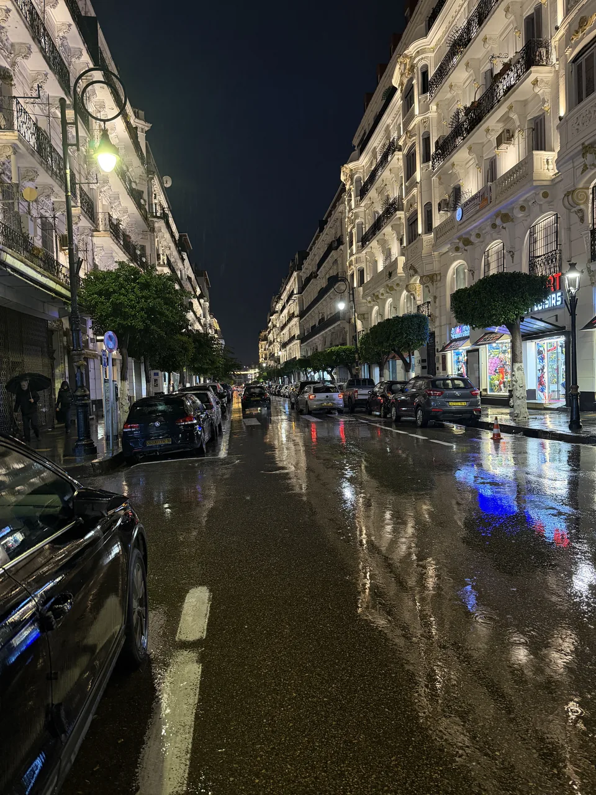

Nature
Nature

ALGÉRIE · L’ÂME MÉDITERRANÉENNE
Alger,
la Blanche.
La mer en horizon. L’histoire à chaque détour.
Et mille façons de se laisser surprendre.
01 Une ville entre mer et collines
02 Un patrimoine à explorer
03 Des instants à vivre
BIENVENUE À EL BAHDJA
Il y a des villes
qui vous restent.
Alger est de celles-là. Une lumière sur les façades blanches, un jardin au milieu de la ville, un horizon qui ne quitte jamais vraiment le regard.
Capitale de l’Algérie, elle se découvre à plusieurs rythmes : celui de ses rues animées, des pas dans la Casbah ou d’une pause face à la mer. Ce carnet vous invite à en explorer les lieux, les ambiances et les contrastes.
Faire connaissance avec AlgerLE DÉBUT DU VOYAGE
Trois lieux. Mille émotions.


Autour de la place Audin, à la nuit tombée.UNE AUTRE LUMIÈRE
Le jour s’efface.
Alger s’illumine.
Les façades prennent des teintes dorées, les reflets glissent sur les rues et la ville raconte une autre histoire. Prolongez la découverte avec notre carnet photographique.
Ouvrir le carnet d’images ↗À VOTRE RYTHME
Une escale.
Votre façon de voyager.
Patrimoine, jardins ou promenades : composez une découverte qui vous ressemble. Notre idée de parcours relie quelques visages de la capitale.
Imaginer ma journée à Alger ↗-
Le matin
Prendre le temps de regarder
Les rues du centre, puis la vieille ville.
-
L’après-midi
Retrouver le vert et le bleu
Une pause au jardin, un regard vers la mer.
-
En soirée
Suivre les lumières
Les façades d’Alger, autrement.